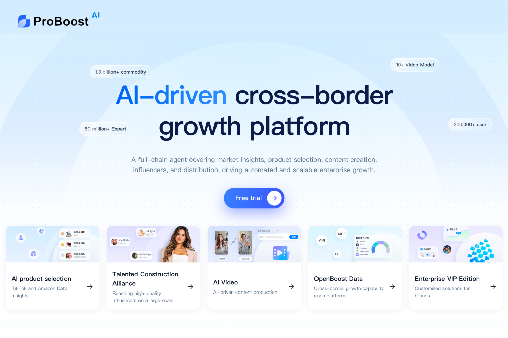
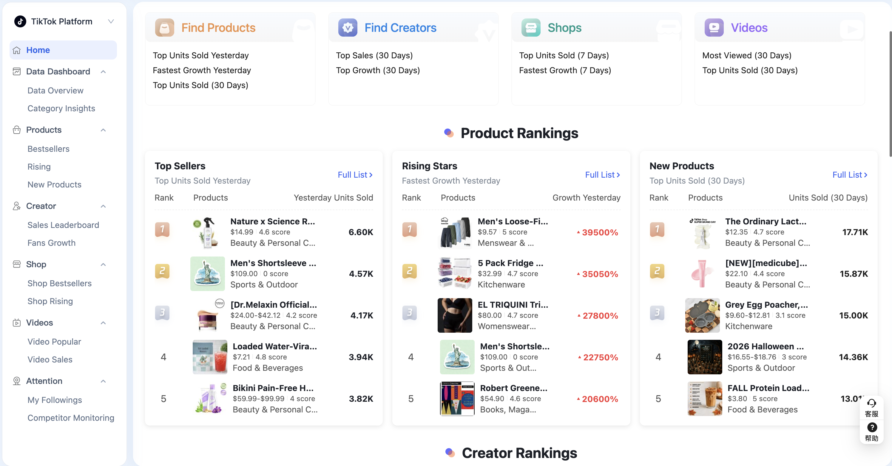
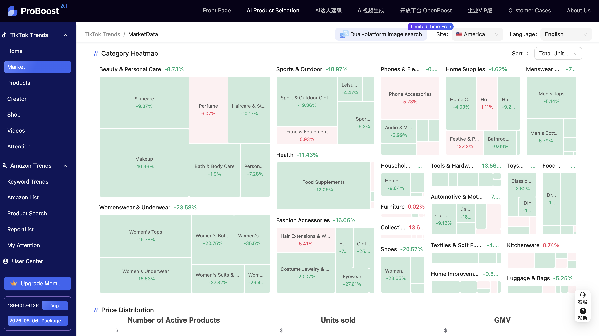
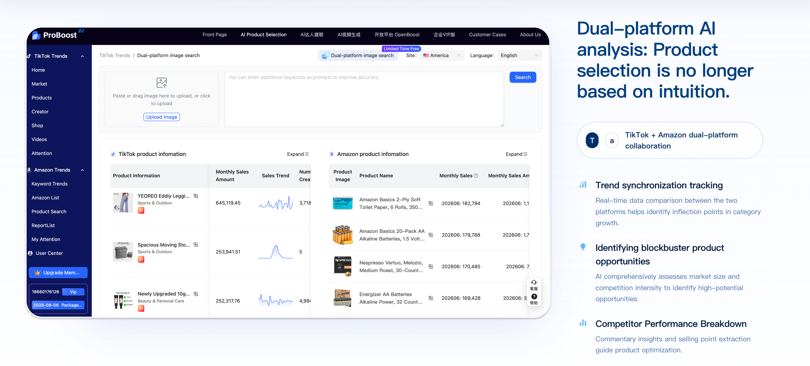
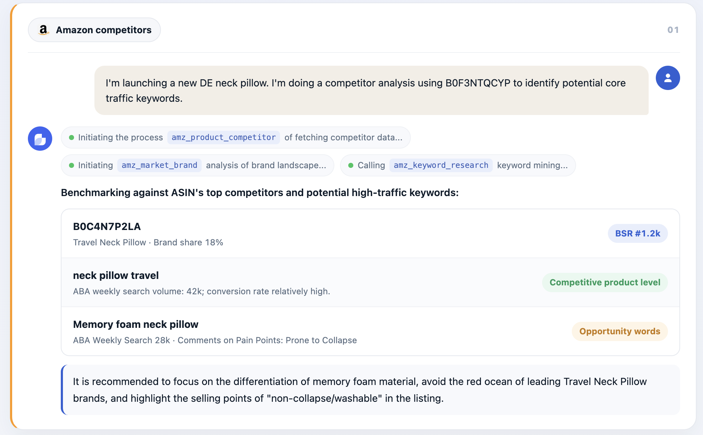
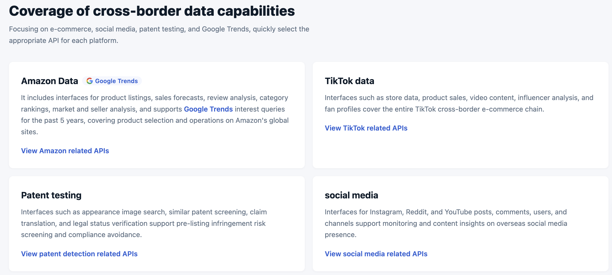

Senior Product Manager · Microdata Inc (ProBoost) · 2025
The problem
For TikTok Shop and Amazon sellers, product selection is the highest-leverage — and highest-risk — decision. Trends move fast, competitors look alike across platforms, and most merchants still pick SKUs from gut feel or scattered screenshots. ProBoost exists to replace that guesswork with a data-backed product-selection workflow.

The foundation
I designed a comprehensive data-analysis module on a million-scale product database — category trends, viral video analytics, influencer signals, and sales rankings — covering 80%+ of real product-selection scenarios for 100K+ cross-border merchants. The goal was simple: let a seller open one dashboard and see what is selling, rising, and newly breaking out.


Dual-platform intelligence
I shipped a dual-platform AI analysis experience so merchants could stop choosing between TikTok trends and Amazon demand. From a single image or keyword, they can pull matching products across both platforms, compare monthly sales and creator coverage, and spot where a trend is already validated on one channel but still open on the other. The feature increased registration conversion by 25%+.

AI product analysis
I launched an AI-powered product-analysis module that turns a product brief or ASIN into a structured competitor and keyword readout — brand share, BSR, ABA search volume, opportunity words, and comment pain points — then closes with a concrete listing recommendation. The module reached 60%+ daily active usage among users.

Data capability
Under the product surfaces sits a broad data capability layer — Amazon listings and forecasts, TikTok shops / videos / influencers, patent screening, and overseas social listening — so selection tools can pull the right signal for each decision instead of inventing a new scrape for every feature.

0→1 extension
I also led 0→1 planning and launch of an Amazon data-analysis browser plugin — a keyword- and category-centered opportunity discovery system that meets sellers where they already browse ASINs.